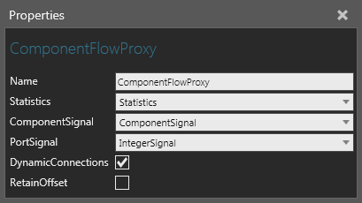
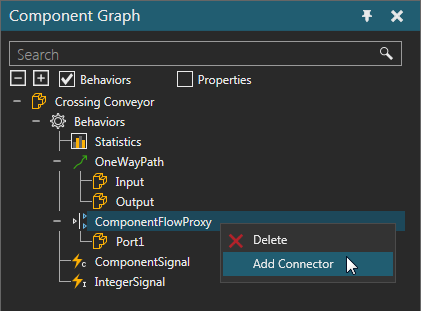
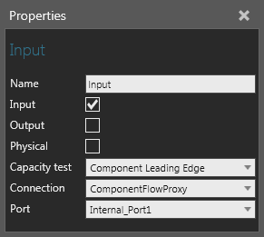

A Component Flow Proxy allows you to manage the flow of components to and from different behaviors using any number of ports.

The ports of a Component Flow Proxy are added and removed using shortcuts and listed with the behavior in the Component Graph panel.

Each port of a Component Flow Proxy has a hidden internal port, which should be used to connect the proxy to behaviors in the same component.

Input port of a One Way Path connected to internal port of Component Flow Proxy
| Name | Description |
| Name | Defines the name of the proxy. |
| Statistics | Defines the Statistics behavior the collects statistics generated by the proxy. |
| ComponentSignal | Defines the Component Signal used to signal what component is trying to enter the proxy. |
| PortSignal | Defines the Integer Signal used to signal from which port a component is trying to enter the proxy. |
| DynamicConnections | Turns on/off the use of connectors defined by a Python Script.
That is, during a simulation a Python Script may connect the proxy's
ports to connectors in other behaviors based on certain logic,
for example a turn table that needs to route components to different
paths.
A True value means the proxy will dynamically form connections during a simulation, which in most cases requires the use of a Python Script. A False value means the proxy will transfer components per the connection of its internal and external ports. For example, if a proxy's internal port receives a component, the component will be transferred from the internal port to its paired external port, and then elsewhere if the external port (a connector added to the proxy) is connected to a transfer point, such as the Input connector of a path. |
| RetainOffset | Turns on/off the ability to retain position of component as it passes through route. |